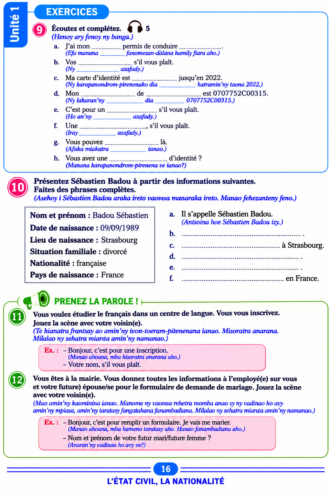

N° 9 : Complétez les pointillés à partir des audios.
Fenoy ny banga araka ny fihainoana ireo rakipeo.
N° 10 : Complétez les pointillés à partir des éléments ci-contre dans le cadre.
Fenoy ny banga amin’ny fampiasana ireo fampahalalana eo amin’ny efajoro.
N° 11 et 12 : Répondez par écrit, puis oralement (message vocal), selon les instructions.
Valio an-tsoratra aloha, avy eo am-bava amin’ny alalan’ny message vocal, araka ny toromarika.